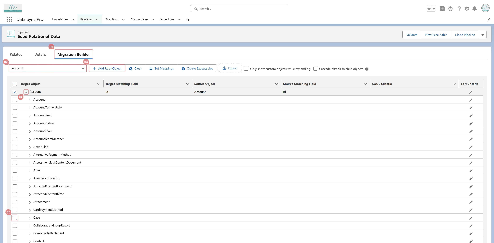
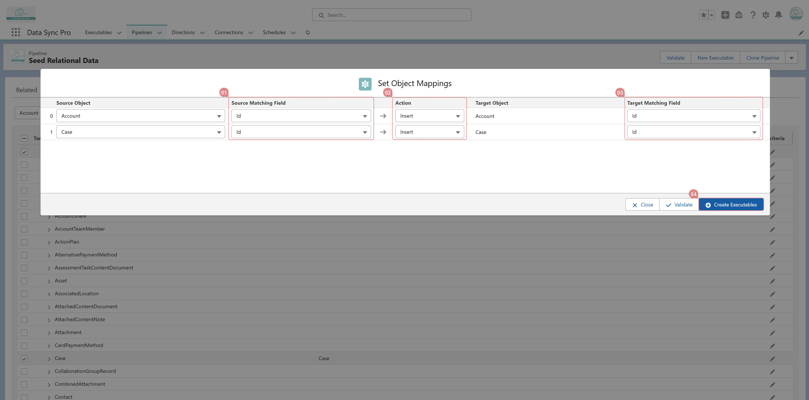

Go to Migration Builder within the Pipeline to set up Batch Executables for syncing multiple
objects.
- Create a Pipeline record and set its direction to Template.

- Navigate to the Migration Builder tab.

- Add root objects, then expand each root object down to the leaf node you want to sync.
- Select the desired leaf node.

- In the modal popup, choose the source and target matching fields, define the action, and click
Create Executables to generate the required batch processes.